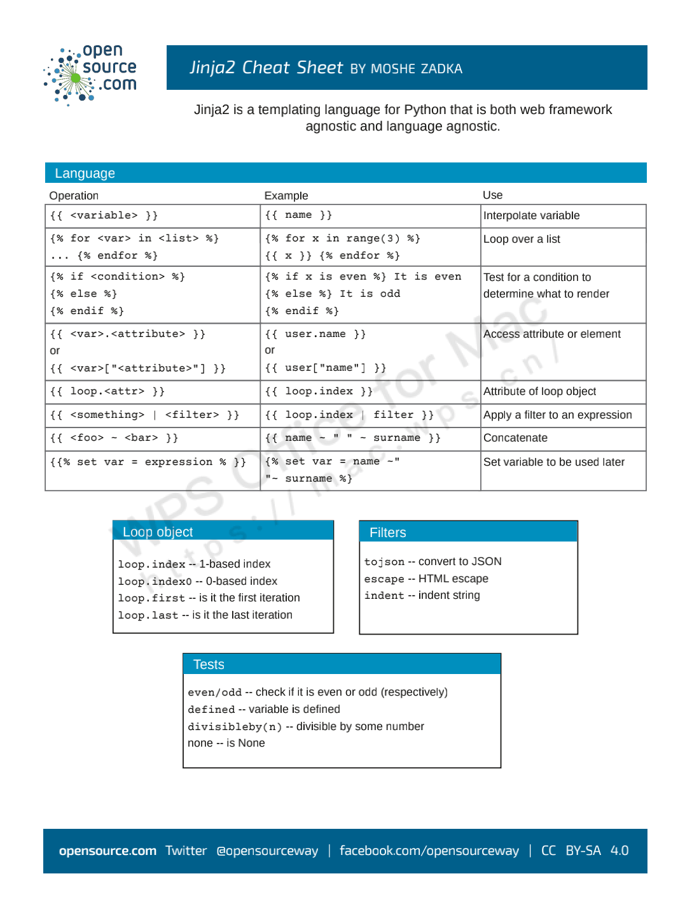

李辉(GreyLi) - Flask 入门教程
使用 Python 和 Flask 开发你的第一个 Web 程序！- flask-tutorial
1. 入门指南
1.1 准备工作
记录安装 Flask 需要依赖的相关库及其作用！
# 安装
$ pip install flask
# 依赖
$ pip list --format=columns
Package Version
------------ -------
Flask 1.1.2
click 7.1.2 # 命令行
itsdangerous 1.1.0 # 签名模块
Jinja2 2.11.2 # 模板语言
MarkupSafe 1.1.1 # 模板加速
Werkzeug 1.0.1 # WSGI1.2 示例代码剖析
剖析示例 Flask 代码的相关参数和对应介绍！
- 第 1-2 行
- 从
flask包导入Flask类，通过实例化这个类，创建一个程序对象app。 - 其中给
Flask类传入的__name__变量就是为了查找文件系统上的资源，比如模板目录和静态资源的路径。
- 从
- 第 4-6 行
- 注册一个视图函数，用于处理请求。
- 使用
app.route()装饰器来为这个函数绑定对应的URL，当用户在浏览器访问这个URL的时候，就会触发这个函数，获取返回值并把返回值显示到浏览器窗口。
# app.py
from flask import Flask
app = Flask(__name__)
@app.route('/')
def hello():
return 'Welcome to watch list!'# 默认为production的运行环境
➜ flask run
* Environment: production
WARNING: This is a development server. Do not use it in a production deployment.
Use a production WSGI server instead.
* Debug mode: off
* Running on http://127.0.0.1:5000/ (Press CTRL+C to quit)
127.0.0.1 - - [31/Dec/2020 15:42:11] "GET / HTTP/1.1" 200 -
127.0.0.1 - - [31/Dec/2020 15:42:12] "GET /favicon.ico HTTP/1.1" 404 -1.3 程序发现机制
Flask 中引入环境变量的原因！
如果我们将上述的示例代码的文件名称修改为其他名称，接着执行 flask run 命令会返回一个错误提示。这是因为 Flask 默认会假设你把程序存储在名为 app.py 或 wsgi.py 的文件中。如果你使用了其他名称，就要设置系统环境变量 FLASK_APP 来告诉 Flask 你要启动哪个程序。这也是为什么 Flask 中存在大量环境变量的原因。
Flask 通过读取这个环境变量值对应的模块寻找要运行的程序实例，你可以把它设置成下面这些值：模块名、Python 导入路径和文件目录路径。
- FLASK_APP
- 用来设置程序运行入口
- FLASK_ENV
- 用来设置程序运行的环境，默认值为
production环境。 - 如果需要开启调试模式的话，可以将其值设置为
development即可开启。 - 调试模式中可以显示错误信息，以及在代码发生变动之后，程序会自动重载。
- 用来设置程序运行的环境，默认值为
- python-dotenv
- 通过安装
python-dotenv专业的工具，来管理系统的环境变量。 - 其中
.env则用来存储敏感数据，不应该提交进Git仓库。 - 其中
.flaskenv用来存储Flask命令行系统相关的公开环境变量。
- 通过安装
# 安装
$ pip install python-dotenv1.4 视图函数
介绍视图函数的作用和使用方式！
视图函数的名字是自由定义的，和 URL 规则无关。和定义其他函数或变量一样，只需要让它表达出所要处理页面的含义即可。
除此之外，它还有一个重要的作用：作为代表某个路由的端点(endpoint)，同时用来生成 URL。对于程序内的 URL，为了避免手写，Flask 提供了一个 url_for 函数来生成 URL，它接受的第一个参数就是端点值，默认为视图函数的名称。
| 类型转换器 | 作用 |
|---|---|
| 缺省 | 字符型；但不能有斜杠 |
path: |
字符型；可有斜杠 |
int: |
整型 |
float: |
浮点型 |
from flask import Flask
from flask.helpers import url_for
app = Flask(__name__)
@app.route('/', methods=['GET'])
def hello():
return 'Welcome to watch list!'
@app.route('/user/<name>')
def user_page(name):
return f'User page: {name}.'
@app.route('/user/<int:user_id>')
def get_user(user_id):
return f'User id: {user_id}'
@app.route('/test')
def test_url_for():
print(url_for('hello')) # /
print(url_for('test_url_for')) # /test
print(url_for('user_page', name='peter')) # /user/peter
print(url_for('test_url_for', num=2)) # /test?num=2
return "Test page."2. 模板使用
2.1 基本语法
介绍 Jinja2 模板的简单使用！
Jinja2 的表达式中支持字符串、数值、列表、元祖、字典、布尔值，同时也支持算数运算、比较运算、逻辑运算，还支持过滤器、测试器、函数调用、字符串连接符，等等。
- 内置变量
| 变量 | 内容 |
|---|---|
loop.index |
循环迭代计数；从 1 开始） |
loop.index0 |
循环迭代计数；从 0 开始） |
loop.revindex |
循环迭代倒序计数；从 len 开始，到 1 结束） |
loop.revindex0 |
循环迭代倒序计数；从 len－1 开始，到 0 结束） |
loop.first |
是否为循环的第一个元素 |
loop.last |
是否为循环的最后一个元素 |
loop.length |
循环序列中元素的个数 |
loop.cycle |
在给定的序列中轮循，如上例在 odd 和 even 两个值间轮循 |
loop.depth |
当前循环在递归中的层级；从 1 开始） |
loop.depth0 |
当前循环在递归中的层级；从 0 开始） |
<h1>{{ username }}的个人主页</h1>
{% if bio %}
<p>{{ bio }}</p>
{% else %}
<p>自我介绍为空。</p>
{% endif %}- 控制语句
# if
{% if name and name == 'admin' %}
<h1>This is admin console</h1>
{% elif name %}
<h1>Welcome {{ name }}!</h1>
{% else %}
<h1>Please login</h1>
{% endif %}# for - 有空格
{% for digit in digits %}
{{ digit }}
{% endfor %}
# for - 无空格
{% for digit in digits -%}
{{ digit }}
{%- endfor %}
```
- **常用语句**
```python
# 忽略模板语法
{% raw %}
<ul>
{% for item in items %}
<li>{{ item }}</li>
{% endfor %}
</ul>
{% endraw %}</ul># 忽略自动转义
{% autoescape false %}
<h1>Hello {{ name }}!</h1>
{% endautoescape %}# 赋值
{% set items = [[1,2],[3,4,5]] %}# with语句
{% with foo = 1 %}
{% set bar = 2 %}
{{ foo + bar }}
{% endwith %}
# with语句 - 执行表达式
{% with arr = ['Sunny'] %}
{% do arr.append('Rainy') %}
{{ arr }}
{% endwith %}2.2 模板渲染
介绍模板渲染的基本方式！
按照默认的设置，Flask 会从程序实例(app.py)所在模块同级目录的 templates 文件夹中寻找模板。
使用 render_template() 函数可以把模板渲染出来，必须传入的参数为模板文件名（相对于 templates 根目录的文件路径），这里即 index.html 文件。为了让模板正确渲染，我们还要把模板内部使用的变量通过关键字参数传入这个函数。render_template() 函数在调用时会识别并执行 index.html 里所有的 Jinja2 语句，返回渲染好的模板内容。在返回的页面中，变量会被替换为实际的值（包括定界符），语句及定界符则会在执行后被移除，同时注释也会一并移除。
from flask import Flask, render_template
from data import movies, name
app = Flask(__name__)
@app.route('/')
def index():
return render_template('index.html', name=name, movies=movies)同时，Jinja2 在模板渲染中，还支持多种上下文：
- 请求对象 - request
<p></p>
- 会话对象 - session
<p>User: </p>
- 全局对象 - g
<p>DB: </p>
- 配置对象 - config
<p>Host: </p>
2.3 过滤器
过滤器包括 Jinja2 库中定义的内置过滤器，当然我们也可以自定义过滤器！

- 自定义过滤器
过滤器简单来讲就是一个函数，在 Flask 应用对象，我们可以使用 add_template_filter 方法来帮我们实现。方法的的第一个参数是过滤器函数，第二个参数是过滤器名称。
from flask import Flask
app = Flask(__name__)
def reverse_order(lst):
return lst[::-1]
# 添加方式一(方法)
app.add_template_filter(reverse_order, 'user_reverse_order')from flask import Flask
app = Flask(__name__)
# 添加方式二(装饰器)
@app.template_filter('user_reverse_order')
def reverse_order(lst):
return lst[::-1]Flask 添加过滤器的方法实际上是封装了对 Jinja2 环境变量的操作。在 Flask 应用中，不建议直接访问 Jinja2 的环境变量。如果离开 Flask 环境直接使用 Jinja2 的话，就可以通过 jinja2.Environment 来获取环境变量，并添加过滤器。
app.jinja_env.filters['user_reverse_order'] = reverse_order2.4 块和宏
考虑到模板代码的重用，Jinja2 提供了块(Block)和宏(Macro)的功能！
- 块 => 功能有些类似于 C 语言中的宏，原理就是代码替换
- 模板不支持多继承，也就是子模板中定义的块，不可能同时被两个父模板替换。
- 模板中不能定义多个同名的块，子模板和父模板都不行，因为这样无法知道要替换哪一个部分的内容。
- 可以使用
super()方法继承父模板中的块里有内容，而不是替换掉
# footer.html
<!DOCTYPE html>
<html lang="en">
<body>
{% block body %}
{% endblock %}
</body>
<footer>
<small>© 2021 <a href="http://movieslist.com">Hello Flask</a></small>
</footer>
</html># index.html
{% extends "footer.html" %}
{% block body %}
# {{ super() }}
{% if name %}
<h1>Hello {{ name }}!</h1>
{% else %}
<h1>Hello World!</h1>
{% endif %}
{% endblock %}- 宏 => 功能有些类似于函数，可以传入参数。
- 既然是函数，就有其声明和调用两个部分。
# 声明一个名为input的宏函数
{% macro input(name, type='text', value='') -%}
<input type="{{ type }}" name="{{ name }}" value="{{ value|e }}">
{%- endmacro %}
# 使用调用
<p>{{ input('username', value='user') }}</p>
<p>{{ input('password', 'password') }}</p>
<p>{{ input('submit', 'submit', 'Submit') }}</p>
# 宏的导入
{% from 'form.html' import input %}3.5 快捷键总结
OpenSource: 总结的快捷键使用文档！
